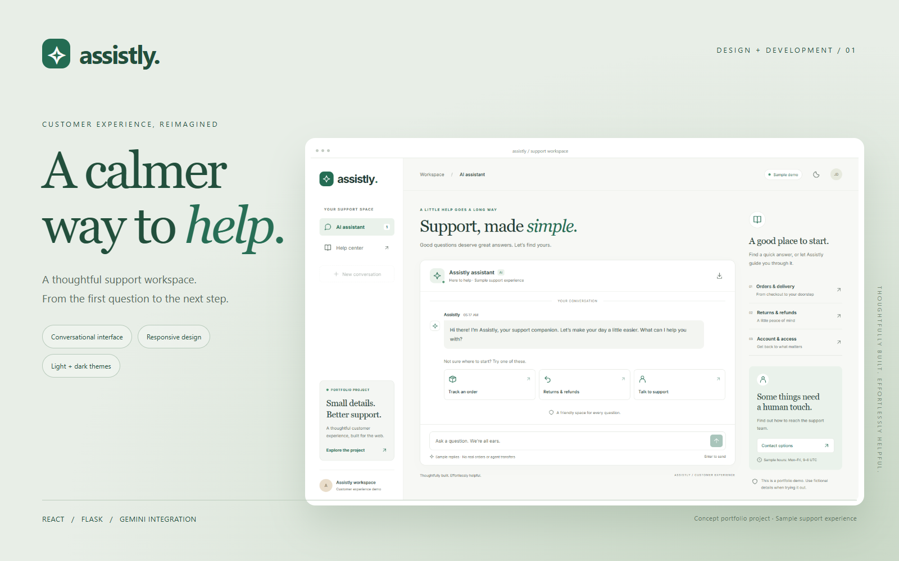
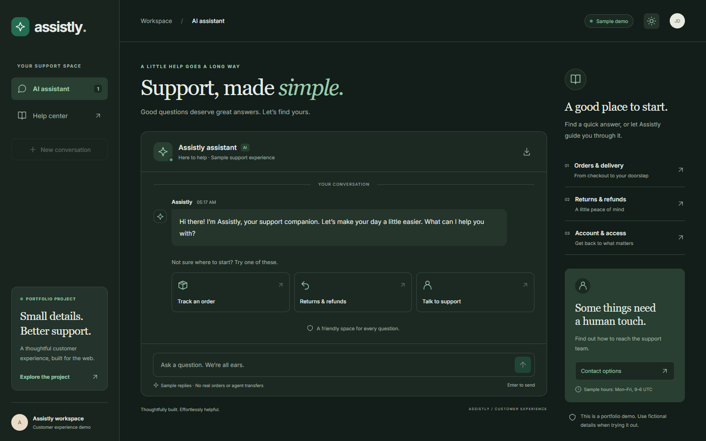
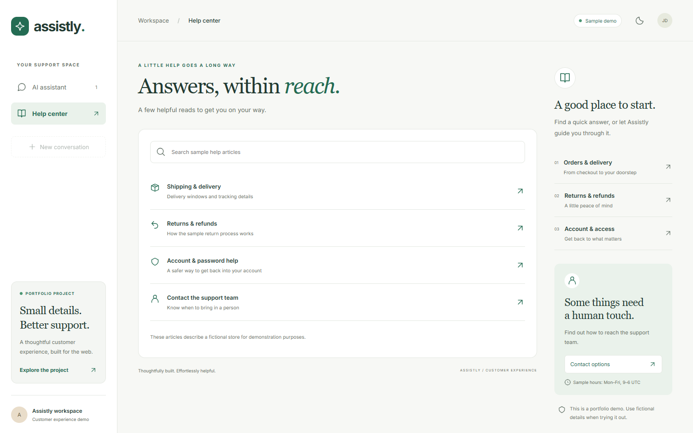
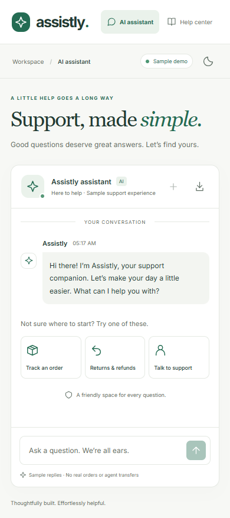

Support, made simple.
A product experience with care.
A basic chatbot evolved into a calm, cohesive support workspace — combining conversational guidance, useful answers, and a clear path forward.


Make assistance feel approachable.
The original project provided a basic chat screen. It needed a more distinctive identity, stronger visual hierarchy, useful navigation, and a reliable demonstration experience to communicate its value in a portfolio.
Build one thoughtful workspace.
Warm neutrals, emerald accents, and editorial typography give the product a calm personality. Guided starting points, plain-language responses, and searchable articles help visitors move from a question to a useful next step.
Details that make the experience work.
Guided conversations
Suggested topics, clear message hierarchy, typing feedback, and keyboard submission.
Self-service answers
A searchable sample help center with focused articles and a route back into chat.
Responsive themes
A cohesive visual system that adapts to desktop and mobile, in light or dark mode.
Continuity & export
Browser-saved history, fresh conversations, and downloadable text transcripts.
Optional live AI
Server-side Gemini integration with bounded conversation history and protected credentials.
A reliable demo
Scripted sample mode works without a key. Live service errors offer retry and recovery.
A clear welcome. A useful next step.

Light theme — a focused chat workspace with contextual support topics.

Dark theme — consistent hierarchy and visual language.

Help center — sample articles with a clear route to the assistant.

Mobile — a streamlined layout that keeps support within reach.
Built to be demonstrated and edited.
The Flask API validates incoming messages and uses per-request history instead of global shared state. The frontend handles persistence, focus, timeouts, and service failures. The source, sample content, and brand mark remain editable.
A complete portfolio presentation.
The package includes the React and Flask source, a production build, a self-contained interactive preview, gallery assets, and ready-to-adapt portfolio copy. Automated checks and browser verification cover the demo experience.
Presented with honest scope.
This is a concept demonstration, with fictional store policies and scripted sample replies by default. Live Gemini use requires server credentials. The demo does not access real orders, issue refunds, reset accounts, or transfer visitors to agents. No commercial client engagement or measured performance result is claimed.